Aguacate
El aguacate requiere suelos profundos, bien drenados, ricos en materia orgánica y con un pH entre 6.0-7.0. Se adapta a climas cálidos y semicálidos. La propagación se realiza por injerto sobre patrones resistentes a enfermedades. Las distancias de plantación son 6-8 m entre árboles y 6-10 m entre hileras.\r\nEs fundamental proporcionar riegos abundantes pero sin encharcar, especialmente en la etapa de cuajado del fruto. Se recomienda la fertirrigación con fórmulas completas y abonos orgánicos. El control de malezas se hace con deshierbes, acolchados o herbicidas.\r\nHay que estar muy atentos al control de la araña roja, trips y otras plagas mediante aplicación de insecticidas y ácaros benéficos.
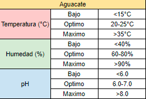
Cacao
El cacao se cultiva óptimamente en zonas tropicales húmedas, con temperaturas medias anuales entre 22-28°C, precipitaciones de 1200-2500 mm bien distribuidas y humedad relativa del 70-80%. Requiere suelos profundos, bien drenados, ricos en materia orgánica, con pH entre 5-7.5. Se propaga por semillas seleccionadas o injertos. La plantación se realiza dejando 3-4 metros entre plantas y 3 metros entre hileras, bajo sombra temporal al inicio y sombra permanente de árboles como las Erithrinas. Necesita riego frecuente en ausencia de lluvias. La fertilización orgánica y aplicación de compuestos con nitrógeno, fósforo, potasio, calcio y magnesio es fundamental según análisis de suelo.
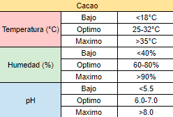
Chirimoya
La chirimoya requiere climas subtropicales a tropicales con temperaturas entre 15-28°C y precipitaciones de 600-1800 mm anuales. Se adapta bien a suelos profundos, bien drenados, ricos en materia orgánica, con un pH entre 6-7.5. Se propaga mediante injertos sobre patrones de la misma especie o especies afines. La plantación se realiza dejando distancias de 6-8 metros entre árboles. Es necesario un período fresco de 2-3 meses para romper la latencia. Requiere riego frecuente, cada 7-10 días en ausencia de lluvias, evitando encharcamientos. La fertilización debe ser balanceada con nitrógeno, fósforo, potasio y materia orgánica según análisis de suelo. Un manejo integrado de plagas como los trips y enfermedades como la pudrición del fruto mediante podas sanitarias, control biológico y aplicaciones fitosanitarias es indispensable.
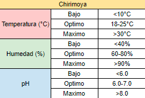
Granada
La granada se adapta bien a climas cálidos y secos, con temperaturas medias entre 20-35°C y precipitaciones de 400-800 mm anuales. Requiere suelos bien drenados, franco-arenosos o franco-arcillosos, con buen contenido de materia orgánica y pH entre 5.5-7.5. Se propaga por semillas, estacas e injertos sobre patrones compatibles. La plantación se realiza dejando distancias de 4-6 metros entre árboles y 6-8 metros entre hileras. Necesita riegos frecuentes al inicio, cada 7-10 días, disminuyendo la frecuencia a medida que se establece. La fertilización orgánica y aplicación de compuestos ricos en nitrógeno, fósforo y potasio en función de análisis de suelo son importantes. Un manejo adecuado de poda de formación y aclareo, control de malezas, y protección contra plagas como la polilla del granado y enfermedades como la pudrición del fruto es fundamental.
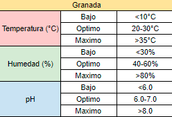
Guayaba
La guayaba se adapta bien a climas tropicales y subtropicales, con temperaturas entre 20°C y 35°C. Prefiere suelos sueltos, bien drenados y ricos en materia orgánica, con un pH entre 5 y 7. Se puede propagar por semillas, estacas o injertos. Para la siembra, se recomienda una distancia de 6 a 8 metros entre árboles. Es importante podar anualmente para mantener una buena estructura y permitir entrada de luz. El riego debe ser frecuente durante el establecimiento, y luego cada 15-20 días en ausencia de lluvia, evitando encharcamientos.\r\nSe recomienda aplicar fertilizantes orgánicos compostados dos veces al año.
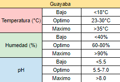
Limón
El limonero requiere suelos profundos, bien drenados, francos o franco-arcillosos y con un pH entre 6.0-7.5. Se adapta a climas cálidos y semicálidos. Se propaga por injerto sobre patrones resistentes a enfermedades. Las distancias de plantación son 5-7 m entre árboles y 6-8 m entre hileras.\r\nEs fundamental proporcionar riegos frecuentes pero sin encharcar, especialmente durante la floración y cuajado de frutos. Se recomienda la fertirrigación con fórmulas ricas en nitrógeno y potasio, complementando con abonos orgánicos.\r\nEl control de malezas se realiza mediante deshierbes mecánicos, acolchados o herbicidas. Es muy importante el monitoreo y control de plagas como el pulgón negro, ácaros, moscas blancas y minadores, aplicando insecticidas y liberando enemigos naturales.
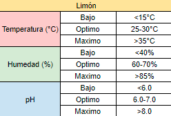
Lichi
El lichi requiere de un clima subtropical cálido, con temperaturas medias anuales entre 21-32°C, precipitaciones de 1000-2500 mm y una estación seca definida de 2-4 meses para inducir la floración. Se adapta mejor a suelos francos, bien drenados, fértiles, con pH entre 5.5-7.5 y alto contenido de materia orgánica. Se propaga mediante injertos sobre patrones compatibles. La plantación se realiza dejando distancias de 8-10 metros entre árboles. Necesita riego abundante durante la floración, cuajado y desarrollo del fruto, reduciendo en la maduración. La fertilización balanceada con nitrógeno, fósforo, potasio y aplicaciones foliares de boro y zinc es clave. Un manejo adecuado de poda de formación y sanitaria, control de malezas, y protección contra plagas como los barrenadores de ramas y enfermedades como la antracnosis es fundamental.
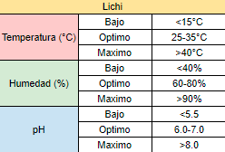
Mamey
El mamey se adapta a climas cálidos y húmedos, con temperaturas medias entre 22-32°C y precipitaciones de 1000-2500 mm anuales. Requiere suelos profundos, bien drenados, fértiles, ricos en materia orgánica y con un pH entre 6-7.5. Se propaga por semillas, aunque también se puede injertar. La plantación se realiza dejando distancias de 10-12 metros entre árboles. Es una especie muy longeva que tarda 5-8 años en iniciar producción. Necesita riego abundante y constante, especialmente en la etapa de floración y cuajado de frutos. La fertilización orgánica con estiércol, compost y fertilizantes compuestos es clave, aplicándose en la época lluviosa. Un manejo integrado de plagas como la mosca del Mediterráneo y enfermedades como la antracnosis es fundamental.
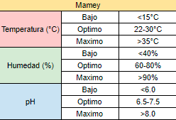
Mango
El mango requiere suelos profundos, bien drenados, franco-arenosos o franco-arcillosos, con un pH entre 5.5-7.5. Se adapta a climas cálidos y semicálidos. Se propaga por injerto sobre patrones resistentes a enfermedades. La distancia de plantación es de 10-12 m entre árboles y 10-12 m entre hileras.\r\nEl riego es clave, aplicando riegos profundos pero sin encharcar, especialmente durante la floración y desarrollo del fruto. Se recomienda la fertirrigación con fórmulas ricas en nitrógeno antes de floración y en potasio durante el cuajado, complementando con abonos orgánicos.\r\nEl control de malezas se realiza con deshierbes mecánicos, acolchados o herbicidas. Es muy importante monitorear y controlar plagas como la mosca de la fruta, trips, ácaros y chinches, aplicando insecticidas y liberando enemigos naturales.
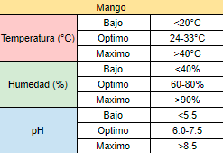
Manzana
El manzano requiere climas templados a frescos, con temperaturas entre 15-30°C durante la primavera y el verano, y períodos fríos de 700-1200 horas bajo 7°C en invierno para romper la latencia. Se adapta a diversos tipos de suelos, pero prefiere suelos francos, bien drenados, profundos, fértiles y con un pH de 5.5 a 7. Se propaga mediante injertos sobre patrones o portainjertos específicos. La plantación se realiza en primavera, dejando 4-6 metros entre árboles y 6-8 metros entre hileras. Requiere riego regular, especialmente durante la floración y llenado de frutos. La fertilización se basa en aportes balanceados de nitrógeno, fósforo, potasio y materia orgánica según análisis de suelo. Un manejo adecuado de poda anual, control de malezas, raleo de frutos y protección contra plagas y enfermedades como la carpocapsa y la sarna son fundamentales.
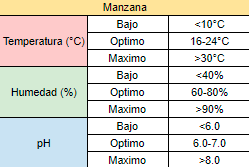
Maracuya
La maracuyá se adapta bien a climas cálidos y húmedos, con temperaturas entre 20-35°C, precipitaciones de 800-1500 mm anuales y humedad relativa del 60-90%. Requiere suelos bien drenados, fértiles, ricos en materia orgánica, con un pH entre 6-7. Se propaga mediante semillas, aunque también por esquejes e injertos. La siembra se realiza dejando 3-4 metros entre plantas y 3 metros entre hileras, utilizando un sistema de espalderas o mallas para el tutorado. Necesita riegos frecuentes durante el establecimiento y períodos críticos como floración y cuajado de frutos. La fertilización debe ser balanceada con nitrógeno, fósforo, potasio y materia orgánica según análisis de suelo.
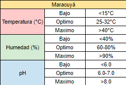
Melon
El melón requiere suelos sueltos, bien drenados, ricos en materia orgánica y con un pH entre 6.0-7.5. Se adapta bien a climas cálidos y secos. La siembra se realiza por trasplante de plántulas o sembrando directamente a 2-3 cm de profundidad, con 1.5-2 m entre hileras y 0.5-1 m entre plantas.\r\nEl riego es fundamental, aplicando riegos abundantes pero sin encharcar, especialmente durante la floración y cuajado de frutos. Se recomienda la fertirrigación con fórmulas ricas en nitrógeno y potasio, complementando con abonos orgánicos.\r\nEs muy importante el control de malezas mediante deshierbes manuales, acolchados o herbicidas selectivos.
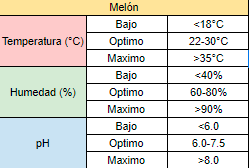
Naranja
Los naranjos requieren suelos profundos, bien drenados, franco-arenosos o franco-arcillosos, con un pH entre 6.0-7.5. Se adaptan mejor a climas cálidos y semicálidos. Se propagan por injerto sobre patrones resistentes a enfermedades. La distancia de plantación es de 6-8 m entre árboles y 6-8 m entre hileras.\r\nEl riego es fundamental, aplicando riegos frecuentes sin encharcar, especialmente durante la floración y cuajado de frutos. Se recomienda la fertirrigación con fórmulas ricas en nitrógeno y potasio, complementada con abonos orgánicos.\r\nEl control de malezas se realiza con deshierbes mecánicos, acolchados o herbicidas. Es muy importante monitorear y controlar plagas como el piojo rojo, minador, mosca del Mediterráneo, aplicando insecticidas y liberando enemigos naturales.
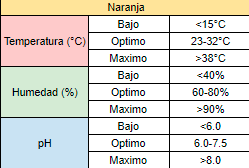
Papaya
La papaya requiere suelos profundos, bien drenados, ricos en materia orgánica y con un pH entre 5.5-7.0. Se adapta bien a climas cálidos y semicálidos. Se propaga por semilla directa o por plántulas injertadas sobre patrones resistentes a enfermedades. La distancia de plantación es 3-4 m entre plantas y 3-4 m entre hileras.\r\nEl riego es fundamental, aplicando riegos profundos pero sin encharcar, especialmente durante la floración y desarrollo de los frutos. Se recomienda la fertirrigación con fórmulas completas ricas en nitrógeno y potasio, complementando con abonos orgánicos.\r\nEl control de malezas se realiza con deshierbes mecánicos, acolchados o herbicidas. Es muy importante monitorear y controlar plagas como los áfidos, araña roja, trips y barrenadores del fruto mediante insecticidas y control biológico.
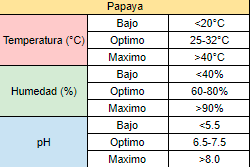
Pera
El peral requiere climas templados con inviernos fríos y veranos cálidos (temperatura media anual de 10-20°C) para romper la latencia y permitir una adecuada floración y fructificación. Se adapta bien a suelos francos, profundos, fértiles, bien drenados, con un pH entre 6-7. Se propaga mediante injertos sobre patrones o portainjertos específicos. La plantación se realiza en primavera, con un marco de 4-6 metros entre árboles y 6-8 metros entre hileras. Necesita riego regular, especialmente durante la floración, cuajado de frutos y llenado. La fertilización debe ser balanceada con nitrógeno, fósforo, potasio y materia orgánica según análisis de suelo.
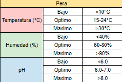
Piña
Aquí tienes las recomendaciones para el cultivo de piña en un solo texto:\r\nLa piña requiere un clima tropical o subtropical cálido, con temperaturas entre 20-32°C, y suelos bien drenados, ligeramente ácidos (pH 4.5-6.5), ricos en materia orgánica. Se propaga mediante hijuelos o retoños sanos de 300-600 gramos que brotan de la planta madre, dejándolos secar y cicatrizar de 7-15 días antes de plantarlos. La siembra se realiza a una distancia de 25-40 cm entre plantas y 90-120 cm entre hileras, plantando los hijuelos en surcos poco profundos (15-20 cm) con la base ligeramente hundida. Necesita riego frecuente pero sin encharcar el suelo, reduciendo el riego cuando la fruta esté madura para mejorar el sabor. Se debe aplicar fertilizantes orgánicos o compuestos NPK cada 2-3 meses durante el crecimiento vegetativo, evitando fertilizar cuando las frutas estén madurando.


Pitaya
La pitaya es una cactácea trepadora que se adapta muy bien a climas cálidos y secos, con temperaturas entre 20-35°C y precipitaciones de 600-1500 mm anuales. Requiere suelos bien drenados, preferiblemente arenosos o pedregosos, con un pH entre 5.5-7.5. Se propaga mediante esquejes u estacas maduras de 30-40 cm de longitud. La plantación se realiza dejando 3-4 metros entre plantas y 6-8 metros entre hileras utilizando tutores o espalderas. Necesita riego moderado, cada 15-20 días en ausencia de lluvia, evitando encharcamientos. La fertilización se realiza con abonos orgánicos ricos en nitrógeno y potasio al inicio de la brotación y durante la floración. Es importante un manejo adecuado de poda para renovar los tallos y favorecer la iluminación.
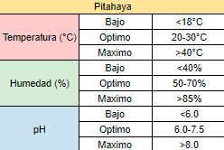
Plátano
El plátano prospera en climas cálidos y húmedos, con temperaturas entre 22-35°C, requiriendo suelos fértiles, profundos, bien drenados y ricos en materia orgánica, con un pH entre 5.5 y 7. Se propaga mediante hijuelos o retoños sanos de 1-2 kg de peso que brotan de la cepa madre, sembrándolos a una distancia de 3x3 m para plataneras enanas y 4x4 m para las de porte alto. Necesita riego abundante y constante, evitando encharcamientos, ya que la falta de agua reduce drásticamente los rendimientos. Se debe aplicar fertilizantes ricos en potasio, nitrógeno y algo de fósforo, además de abonos orgánicos como compost, estiércol o coberturas vegetales. Es importante deshijar periódicamente, dejando 2-3 hijos por cepa, así como controlar malezas mediante deshierbes y uso de coberturas vegetales.
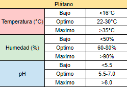
Sandia
La sandía requiere suelos sueltos, bien drenados, ricos en materia orgánica y con un pH entre 6.0-7.0. Prefiere climas cálidos. La siembra se realiza por trasplante de plántulas o directamente sembrando a 2-3 cm de profundidad, con 1.5-2 m entre hileras y 0.5-1 m entre plantas en la misma hilera.\r\nEl riego es fundamental, aplicando riegos abundantes pero sin encharcar, especialmente durante la floración y cuajado de frutos. Se recomienda fertirrigación con fórmulas ricas en nitrógeno y potasio, complementando con abonos orgánicos.\r\nEs muy importante controlar las malezas mediante deshierbes manuales, acolchados o herbicidas selectivos. Hay que monitorear y controlar plagas como los áfidos, araña roja, trips y minadores con insecticidas y liberando enemigos naturales.
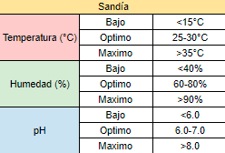
Tamarindo
El tamarindo se adapta muy bien a climas tropicales y subtropicales cálidos, con temperaturas medias de 25-35°C y precipitaciones entre 500-1500 mm anuales. Prefiere suelos francos, bien drenados, con buen contenido de materia orgánica y un pH entre 4.5-7.5. Se propaga mediante semillas o injertos sobre patrones de la misma especie. La plantación se realiza dejando distancias de 8-10 metros entre árboles. Es un árbol muy resistente a la sequía que necesita riegos abundantes solo durante el establecimiento y floración-fructificación. La fertilización se basa en aportes moderados de compuestos orgánicos y minerales ricos en nitrógeno, fósforo y potasio. Un manejo adecuado de poda de formación, eliminación de ramas secas y aclareo de frutos es clave.
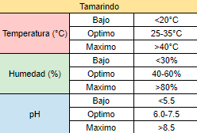
Tuna
La tuna se adapta bien a climas secos y semiáridos, requiriendo pleno sol y temperaturas entre 20-35°C. Se puede cultivar en una amplia variedad de suelos, desde arenosos hasta pedregosos, siempre y cuando tengan buen drenaje.\r\nLa propagación se realiza mediante hijuelos o pencas de la planta madre. Se plantan directamente en el suelo, enterrando un tercio de la penca a una distancia de 3-5 metros entre plantas.\r\nEl riego debe ser escaso, solo cuando el suelo esté muy seco, ya que la tuna es una planta resistente a la sequía. Aplicar riegos más frecuentes solo durante la floración y cuajado de frutos.
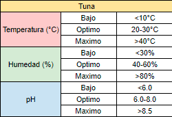
Zapote
El zapote requiere climas cálidos y húmedos, con temperaturas entre 22-30°C y precipitaciones de 1200-2500 mm anuales. Se adapta a suelos profundos, fértiles, bien drenados, con buen contenido de materia orgánica y pH entre 5.5-7. Se propaga por semillas, aunque también por injertos. La plantación se realiza dejando distancias de 10-12 metros entre árboles. Es un árbol de lento crecimiento que inicia producción entre los 5-8 años. Necesita riego frecuente, especialmente durante la floración y cuajado de frutos. La fertilización orgánica con estiércol, compost y fertilizantes compuestos ricos en nitrógeno, fósforo y potasio es importante, aplicándose preferiblemente en época lluviosa. El control de malezas, poda de formación y un manejo integrado de plagas como los trips.


Zarzamora
La zarzamora se adapta a climas templados a cálidos, con temperaturas medias anuales entre 15-25°C. Requiere suelos bien drenados, fértiles, ricos en materia orgánica y con un pH entre 5.5-7. Se propaga mediante acodos, esquejes o divisiones de coronas. La plantación se realiza dejando 2-3 metros entre plantas y 3-3.5 metros entre hileras. Es necesario instalar un sistema de espalderas o tutores para sostener las ramas. Requiere riego frecuente durante el establecimiento y moderado en producción, evitando encharcamientos. La fertilización debe incluir nitrógeno, fósforo, potasio y materia orgánica cada año.
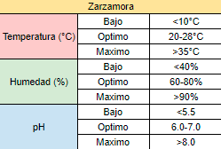